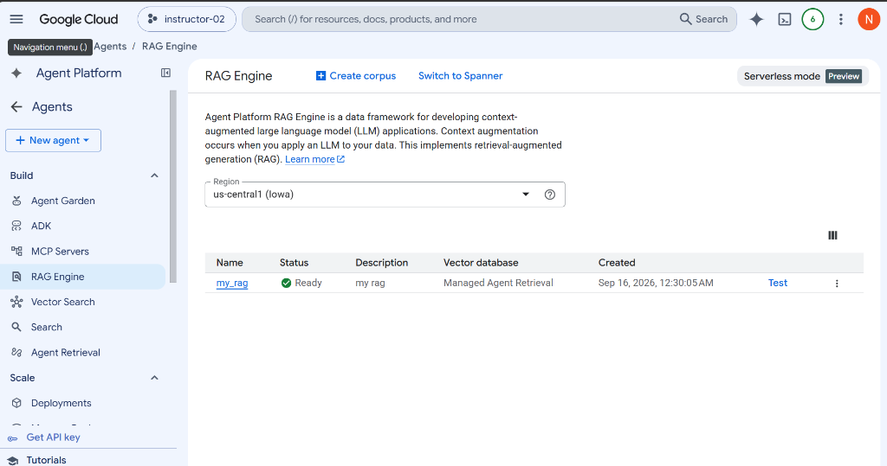
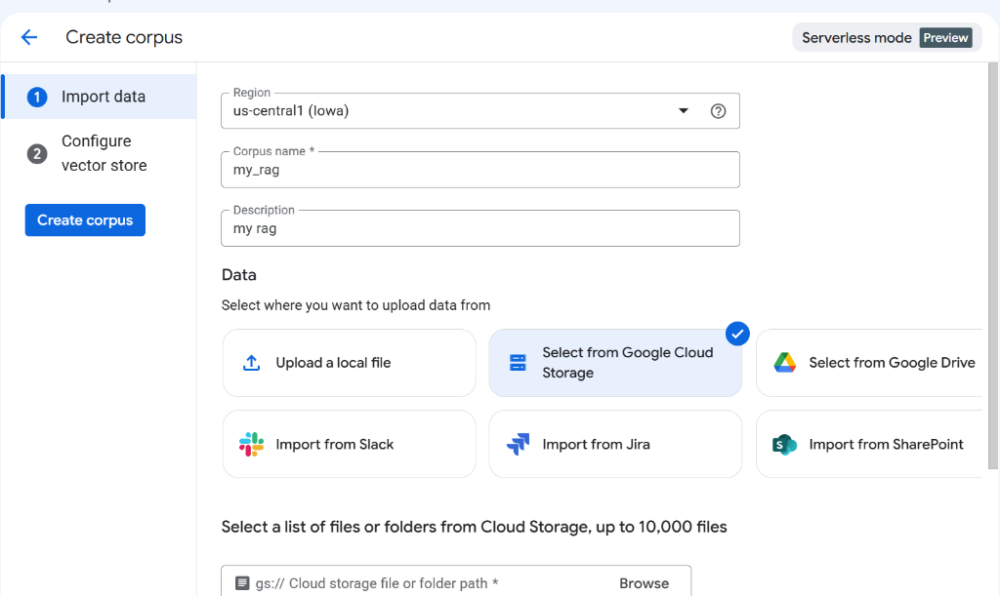
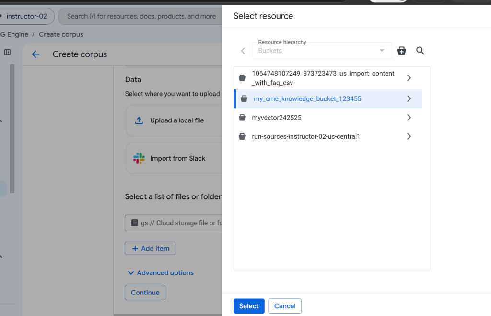
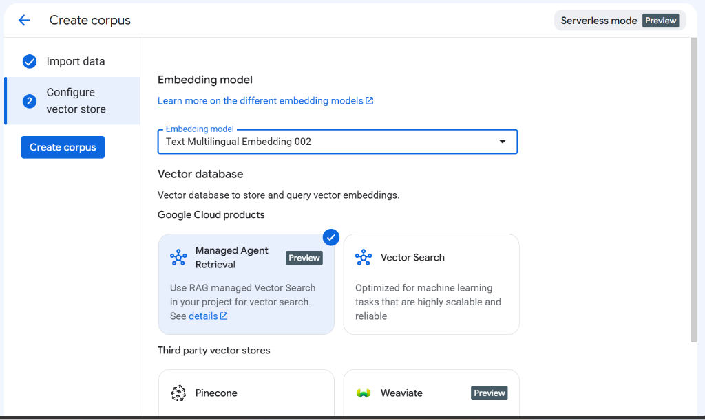

Lab 9: RAG Engine Corpus Creation & Vertex AI Grounding
Learn how to build, configure, and query a Retrieval-Augmented Generation (RAG) Corpus on Vertex AI Agent Platform and ground Google ADK agents in domain knowledge.
Vertex AI's Agent Platform RAG Engine manages semantic document chunking, text embedding generation, and vector retrieval in a fully managed, serverless architecture.
RAG Architecture Workflow
-
Review RAG Architecture & Lab Objectives Understand how document embeddings ground Gemini models in factual CME data.
Step 1: GCP Prerequisites & Serverless Mode Verification
Enable Vertex AI APIs, configure authentication, and verify Serverless Mode on Google Cloud Console.
1. Enable Required Google Cloud APIs
# Enable Vertex AI, Cloud Storage, and Agent Platform APIs
$ gcloud services enable aiplatform.googleapis.com storage.googleapis.com
# Authenticate gcloud CLI & Application Default Credentials (ADC)
$ gcloud auth login
$ gcloud auth application-default login
# Set your active GCP project
$ gcloud config set project YOUR_PROJECT_ID2. Verify Serverless Mode in Vertex AI Console
In the Google Cloud Console navigation menu, navigate to Agent Platform / Agents -> RAG Engine. In the top right header, verify that the Serverless mode (Preview) badge is active.
-
Enable GCP APIs & Verify Serverless Mode Run gcloud enable commands for `aiplatform.googleapis.com` and `storage.googleapis.com`.
Step 2: Accessing RAG Engine & Creating a Corpus
Navigate to the RAG Engine page under Agent Platform and initiate corpus creation.
In the Google Cloud Console, open the left navigation menu and select Agents / RAG Engine under the Agent Platform section.

Dashboard Overview:
- Region Selection: Choose
us-central1 (Iowa). - Serverless Mode Badge: Confirm the
Serverless mode Previewpill is displayed in the upper right. - Create Corpus: Click the + Create corpus button to open the corpus configuration wizard.
-
Open RAG Engine & Click Create Corpus Confirm region is set to `us-central1 (Iowa)` and serverless mode is active.
Step 3: Defining Corpus Metadata & Selecting Data Source
Specify the corpus name, description, region, and choose Google Cloud Storage as your data source.

Step-by-Step Instructions:
- Region: Select
us-central1 (Iowa). - Corpus Name: Enter
my_rag. - Description: Enter
my ragor a descriptive summary (e.g. CME Product Support Knowledge Base). - Data Source Selection: Click the card for Select from Google Cloud Storage (supported options include Local File, GCS, Google Drive, Slack, Jira, SharePoint).
-
Configure Corpus Name & Select GCS Import Set corpus name to `my_rag` and select Google Cloud Storage.
Step 4: Browsing & Selecting Cloud Storage Bucket
Locate your GCS knowledge bucket containing CME product documentation and FAQ files.

Bucket Selection Workflow:
- Click Browse next to the Cloud storage file or folder path field.
- In the Select resource modal, browse your project's bucket hierarchy.
- Select your CME knowledge bucket (e.g.
my_cme_knowledge_bucket_123455). - Click Select and then click Continue to proceed to Vector Store configuration.
-
Attach GCS Knowledge Bucket Select `my_cme_knowledge_bucket_123455` and click Continue.
Step 5: Embedding Model & Vector Database Configuration
Select the text embedding model and choose Managed Agent Retrieval for serverless vector indexing.

Vector Store Settings:
- Embedding Model: Choose
Text Multilingual Embedding 002from the dropdown menu (ortext-embedding-004). - Vector Database: Under Google Cloud products, select Managed Agent Retrieval (Preview). This provides zero-infrastructure managed vector indexing optimized for Agent Platform workflows.
- Create Corpus: Click the blue Create corpus button on the left sidebar to start document indexing.
-
Complete Vector Store Setup & Build Corpus Select `Text Multilingual Embedding 002` and `Managed Agent Retrieval`, then click Create corpus.
Step 6: Connecting RAG Corpus to Google ADK Agent
Integrate the created RAG Corpus into your Python Google ADK Agent using `agentplatform` and `VertexRagStore`.
Ready in Vertex AI Console, copy its resource path (e.g. projects/.../ragCorpora/YOUR_CORPUS_ID) and attach it to a custom ADK tool function!
import agentplatform
from agentplatform import types
from google.genai import types as genai_types
from google.adk import Agent
PROJECT_ID = "instructor-02"
LOCATION = "us-central1"
CORPUS_NAME = "projects/instructor-02/locations/us-central1/ragCorpora/4254591030004809728"
MODEL = "gemini-2.5-flash"
# Initialize Agent Platform RAG Client
rag_client = agentplatform.Client(
project=PROJECT_ID,
location=LOCATION,
)
# RAG Retrieval Tool Function
def search_exchange_knowledge(query: str) -> str:
"""Search the CME exchange knowledge base for information about exchanges and products."""
response = rag_client.rag.retrieve_contexts(
vertex_rag_store=genai_types.VertexRagStore(
rag_resources=[
genai_types.VertexRagStoreRagResource(
rag_corpus=CORPUS_NAME
)
]
),
query=types.RagQuery(
text=query,
rag_retrieval_config=genai_types.RagRetrievalConfig(
top_k=3
)
)
)
return str(response)
# Grounded ADK Agent
root_agent = Agent(
name="cme_exchange_rag_agent",
model=MODEL,
description="Answers questions about CME exchanges and products using RAG grounding.",
instruction="""
You are a CME Exchange Support Agent.
Use search_exchange_knowledge whenever the user asks factual questions about CME exchanges or products.
RULES:
- Base factual answers on information returned by the RAG tool.
- Do not invent information.
- If the knowledge base does not contain the answer, say so clearly.
""",
tools=[search_exchange_knowledge],
)-
Review ADK RAG Integration Code Verify how `search_exchange_knowledge` queries the Vertex AI RAG Corpus.
Step 7: Execution & Verification Prompts
Run the RAG-grounded ADK agent using ADK CLI and execute test queries to verify document grounding.
ADK Launch Commands
# Single Query Execution
$ adk run lab9_agent_grounding.part2_custom_rag "What are the core clearing rules for CME Globex?"
# Web UI Development Server
$ adk web lab9_agent_grounding.part2_custom_rag# Single Query Execution
PS> adk run lab9_agent_grounding.part2_custom_rag "What are the core clearing rules for CME Globex?"
# Web UI Development Server
PS> adk web lab9_agent_grounding.part2_custom_rag# Single Query Execution
$ adk run lab9_agent_grounding.part2_custom_rag "What are the core clearing rules for CME Globex?"
# Web UI Development Server
$ adk web lab9_agent_grounding.part2_custom_ragTest Prompts for RAG Grounding Verification
Expected Behavior: RAG tool returns no matching contexts; agent responds clearly with "Information not found in the knowledge base." as per strict grounding policy.
-
Run RAG Verification & Test Cases Verify that Gemini answers are strictly grounded in retrieved RAG contexts.
Step 8: Knowledge Assessment
Test your understanding of RAG Corpus creation, vector store configuration, and ADK grounding.
-
Complete Knowledge Quiz Answer all assessment questions to complete Lab 9.
Step 9: Lab Completion Certificate
Congratulations! You have successfully completed Lab 9: RAG Corpus Creation & Vertex AI Grounding.